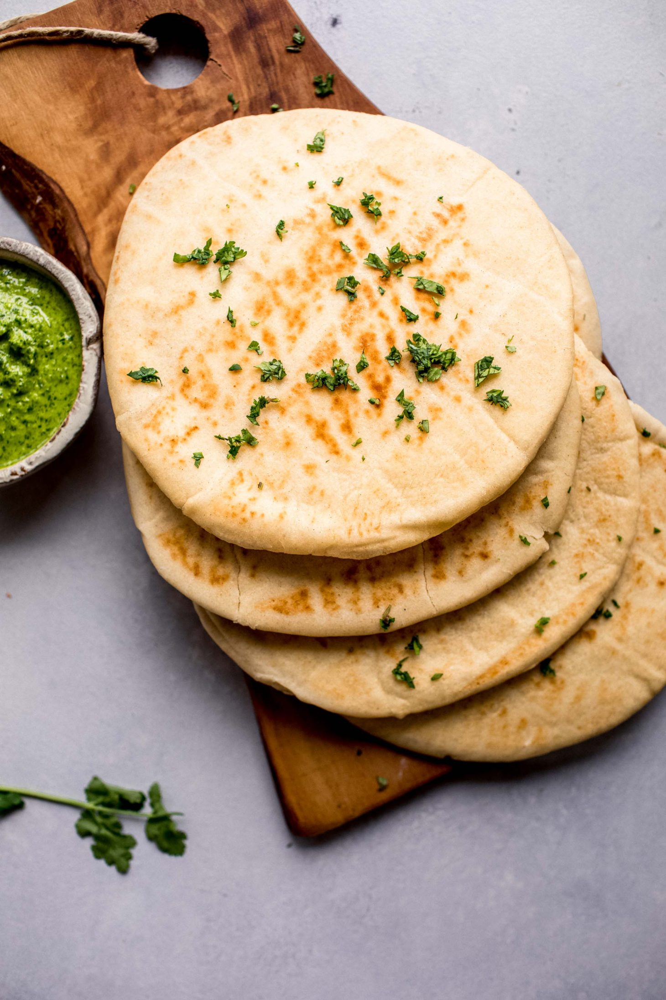

Ingredients
Naan Recipe
For servings 10
- 4 cups flour
- 2 cups plain yogurt
- 1 teaspoon baking powder
- 1 teaspoon salt
- 3 tablespoons butter (melted)
Cilantro Mint Chutney
- 1 cup cilantro leaves
- 1/2 cup mint leaves
- 1 jalapeno (chopped)
- 1 teaspoon cumin
- 1/2 teaspoon salt
- 2 teaspoons lemon juice
- water (as required)
Instructions
Naan
- Stir together flour, baking powder and salt. Add the yogurt and stir until the dough comes together well, adding more flour if necessary.
- Knead the dough for 5 minutes.
- Place the dough in an oiled bowl, covered with a towel, and allow to rest for an hour or longer. (This can rest overnight)
- Take out the dough and cut it into 10 equal pieces. Roll each piece into a ball and then flatten into a disc. Roll each disc out with a rolling
pin until 1/4 inch thick and about 8 inches in diameter.
- Heat a large nonstick frying pan or griddle over medium heat. Also preheat your oven broiler to high.
- One at a time, take each piece and cook over medium heat for 4-5 minutes, until the bottom is browned and it is starting to puff up.
Slide a spatula under the naan and transfer it to the top rack of the oven. Allow the top to continue cooking for a minute or two,
until nicely browned and puffy.
- Remove from the oven and brush with melted butter if desired.
Cilantro Mint Chutney
- Place all ingredients (except water) into blender and process until everything is crushed and combined.
- Add water, 1 teaspoon at a time, to form a smooth paste.
- Adjust seasonings as desired with additional salt, lemon juice, or spices.
- Serve alongside the naan.